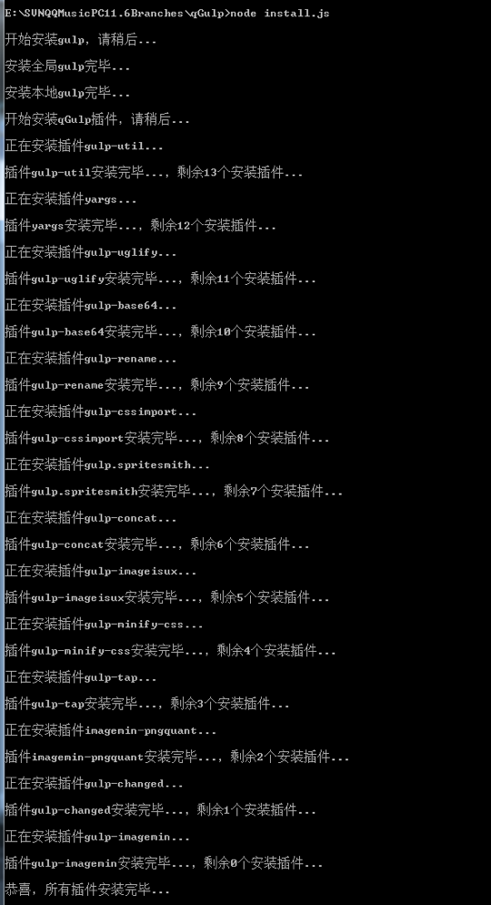
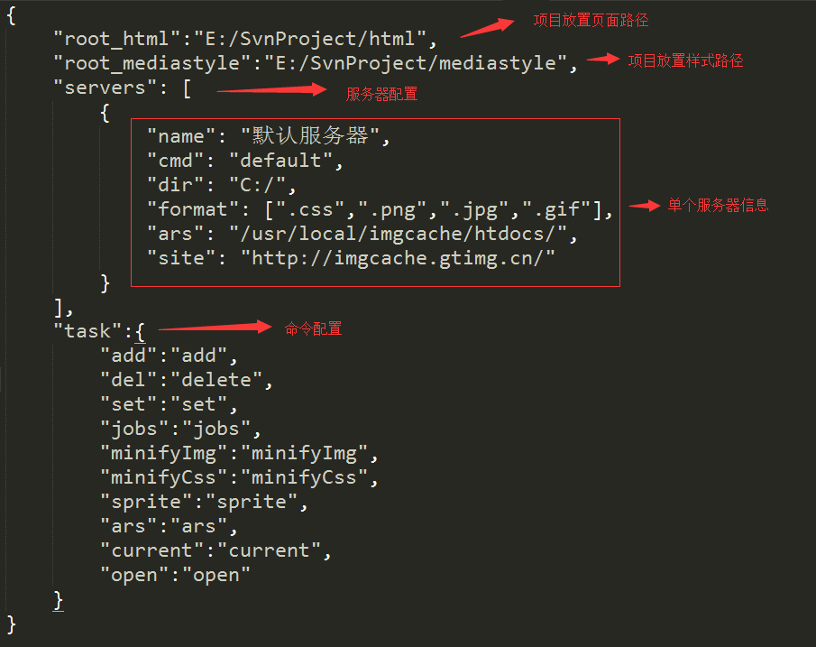
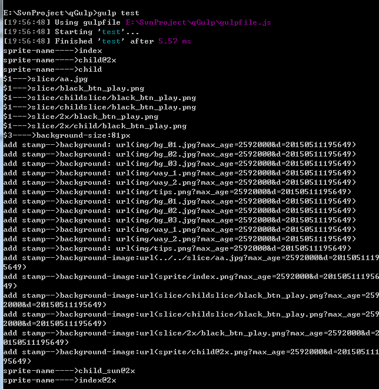

如何安装Yummy
1、先在本地搭建好nodejs环境https://nodejs.org/
2、设置代理：（部分公司网如果有需要）
npm config set registry https://registry.npmjs.org npm config set proxy http://proxy.XXX.com:8080/
查看代理设置情况：
npm config list
3、把Yummy压缩包解压到本地项目根目录下（比如SVN）
4、打开终端窗口，执行如下命令安装基础依赖插件
node install.js
这个安装过程可能会比较慢，因为有些插件拉取会比较慢，大家可以先干别的事情，当所有的插件安装完之后会有提示“恭喜，所有插件安装完毕…”。到此所有的安装过程完毕。

修改配置
打开qGulp文件夹下的config文件夹的base.json文件，修改以下地方的配置：
dir_mobile的值是你映射到本地的手机测试服务器硬盘分区路径
dir_233_css的值是你映射到本地的233服务器硬盘分区路径，这里只需要定位到根目录就好啦 自定义命令项根据个人使用习惯来配置

测试是否成功
当上面的两个步骤完成后，你就可以正式使用qGulp了，先来测试一下是否可以了，你只需要运行以下命令即可：（因为已经内置了一个测试用例）
gulp test
此时如果出现下面的结果，表示可以正常使用啦
